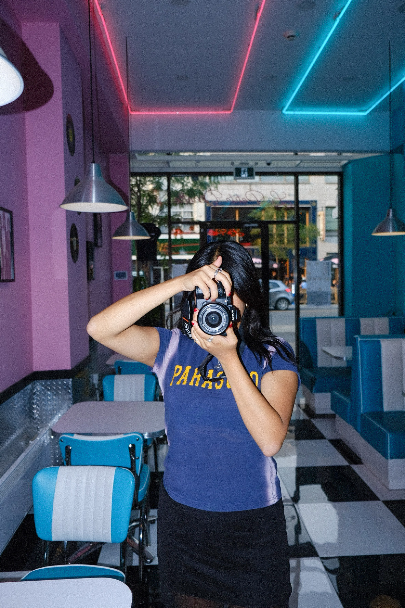

Roselyne Du
Roselyne Du is a Canadian photographer, singer, film director, and author.
Born and raised in Montreal, she was first inspired to capture her city’s prominent cultural diversity by writing her children’s book Rose in Montreal, published in 2019.
As a singer and songwriter, she has released two songs on all major platforms, “No Time” (2019) and “Something to Lose” (2022) exploring different genres and ways of music-making. She enjoys posting covers and snippets of her original songs to her music Instagram page.
Simultaneously, she started offering freelance photography and videography services to gain more experience behind the camera.
As someone who is deeply passionate about cinema, Roselyne is also an aspiring filmmaker and actress who is constantly either partaking in or creating film projects.
